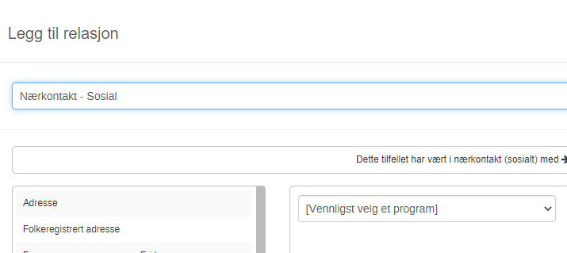
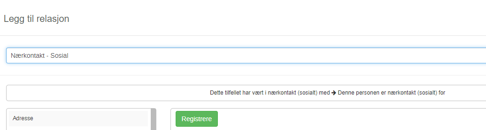
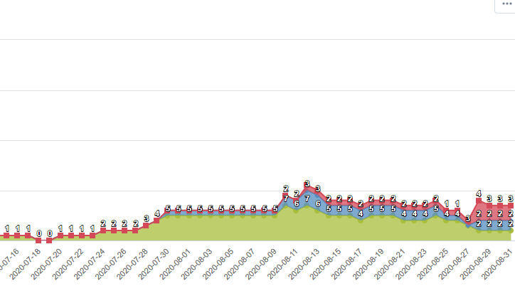
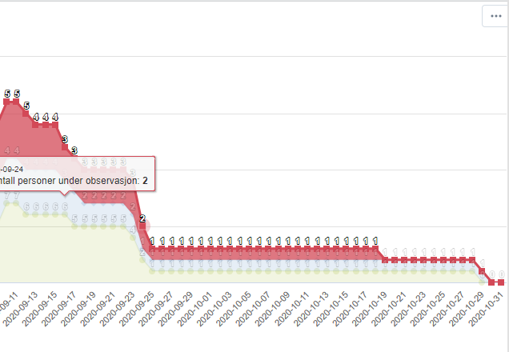
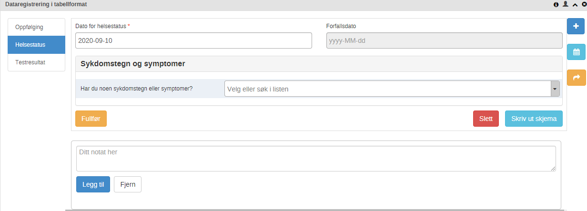
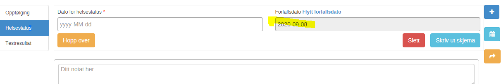

Release notes version 1.1.1
- Sak #116: Registrering av nærkontakt under relasjoner - Sosial
Ved registrering av “Nærkontakt - Sosial” i versjon 1.1.0, i relasjoner måtte man velge hvilket program kontakt skulle registreres i.

Rettet i versjon 1.1.1: Programmet “Nærkontaktregistrering og oppfølging” er automatisk valgt.

- Sak #143: Perioder for graf til personer i isolasjon, karantene og observasjon
I versjon 1.1.0 hadde grafen for personer i isolasjon, karantene og observasjon en periode fra 01.05.20 - 31.08.20

I ny versjon er det endret til periode: 01.06.20 - 31.10.20

- Sak #145 Planlagt helsestatus i dag eller før på “kontaktoppfølging i dag”
I versjon 1.1.0 var programmet satt opp til å vise en kontakt med en aktiv helsestatus under listen “kontaktoppfølging i dag”.

I versjon 1.1.1 er programmet satt opp til å vise en kontakt med planlagt helsestatus for inneværende dag, og for de som har en planlagt helsestatus dato som er passert.
